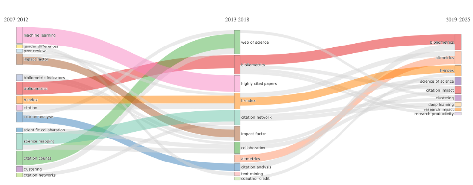

저자: Massimo Aria, Luca D'Aniello, Michelangelo Misuraca, Maria Spano 날짜: 2026-03-06 arXiv: 2603.06436 리뷰 모드: PDF
이 논문은 과학 매핑(science mapping)의 종단적 주제 분석에 내재된 구조적 불일치를 해소하는 통합 프레임워크를 제안한다. 기존 방법론은 주제 탐지(thematic detection)를 가중 공동출현 네트워크 기반 클러스터링으로 수행하면서도, 주제 간 시간적 연결(lineage)은 키워드 집합 겹침이라는 어휘적(lexical) 기준으로 추론하는 이중 논리의 모순을 지닌다. 저자들은 이 불일치를 "어휘 지속성"과 "관계 구조 재구성"의 혼동으로 정의하고, 주제 탐지와 계보 재구성 모두를 동일한 가중 관계 구조 안에서 수행하는 방법을 제안한다. 핵심 혁신은 세 가지다: (1) fuzzy 소속 함수를 통한 출판물의 다중 주제 귀속, (2) PageRank 기반 가중 포함 지수(weighted inclusion index)와 구조적 중요도 지수(importance index)를 결합한 계보 강도(lineage strength) 측정, (3) 절대·상대 이중 임계값 기반 자동 계보 탐지. Journal of Informetrics(2007–2025)의 3개 시기 분석으로 실증하며, SciMAT과의 비교를 통해 제안 방법이 분할-병합(split-merge) 패턴과 점진적 주제 변화를 더 정교하게 포착함을 보인다.
공동출현 네트워크 구성: 각 시기 t에 대해 연관 강도 지수(association strength)로 정규화된 공동출현 행렬 W(t)를 구성한다. Louvain 알고리즘으로 커뮤니티 탐지를 수행해 주제 클러스터 C(t)를 도출한다.
Fuzzy 소속 행렬: 출판물 i의 클러스터 h에 대한 소속 점수는 공유 키워드의 PageRank × IDF 가중치 합산으로 정의된다:
$$s_{ih}^{(t)} = \sum_{k \in K_i \cap K(C_h^{(t)})} PR_k^{(t)}(C_h) \cdot \log\frac{|D^{(t)}|}{df_k^{(t)}}$$
정규화 후 fuzzy 소속 행렬 U(t)를 얻으며, 클러스터의 유효 크기는 fuzzy cardinality로 계산한다.
계보 강도: 연속 시기 간 클러스터 쌍의 연결 강도는 가중 포함 지수 Iw(방향적 커버리지)와 중요도 지수 Ω(상호 구조적 관련성)의 가중 평균으로 정의한다:
$$L(C_h^{(t)}, C_j^{(t+1)}) = \alpha \cdot I_w + (1-\alpha) \cdot \Omega$$
α=0.5가 기본값이며, α 민감도 분석(0.3, 0.7)을 통해 주요 경로의 견고성을 확인한다.
자동 계보 탐지: 절대 임계값(θ_abs) 초과 또는 상위 k개 연결이라는 이중 조건으로 유의미한 계보를 선택, 방향성 그래프 G를 구성한다.
Journal of Informetrics 3개 시기(2007–2012: 288편, 2013–2018: 417편, 2019–2025: 695편) 분석에서 제안 방법은 각각 18, 12, 9개 클러스터를 탐지했다. 클러스터 수의 감소는 분야 성숙에 따른 구조적 통합을 반영한다. SciMAT은 동일 기간에 7, 14, 14개 클러스터를 탐지해 반대 경향을 보였는데, 이는 어휘 성장에 따른 단순 분절화를 반영한다.
진화 그래프에서 bibliometrics 클러스터의 연속적 강한 계보, citation 클러스터의 h-index·citation analysis·altmetrics로의 분화, altmetrics의 부분적 제도화(period 3에서 이중 계보) 등이 포착되었다. SciMAT은 이러한 분할-병합 패턴을 재현하지 못하고 bibliometrics 허브로의 중앙 집중화만을 보였다.

Figure 5. 제안 프레임워크가 생성한 주제 진화 그래프. 노드 크기는 fuzzy cardinality에 비례하고 엣지 두께는 계보 강도를 나타낸다. bibliometrics의 강한 연속성, citation의 분화, altmetrics의 이중 계보가 가시화된다.
방법론적 일관성 복원: 주제 탐지와 계보 재구성을 동일한 관계적 패러다임 내에서 수행함으로써, 기존 방법의 어휘-구조 이중 논리 모순을 원칙적으로 해소한다. 이는 단순한 기술적 개선이 아니라 과학 매핑의 존재론적 기반을 재정의하는 개념적 기여다.
Fuzzy 소속의 현실성: 복수 주제에 걸친 현대 학술 논문의 특성을 반영해 이진(binary) 귀속 대신 graded 소속을 채택한다. IDF 가중치 통합으로 편재적(ubiquitous) 키워드의 과대 영향을 억제하며, fuzzy cardinality를 통한 클러스터 크기 추정이 더 정확한 시간적 변화 추적을 가능하게 한다.
투명한 파라미터화: α 파라미터가 방향적 커버리지와 상호 구조적 관련성 간의 균형을 명시적으로 조절한다. 기존 방법들이 연속성 측정 기준을 암묵적으로 내재화한 것과 달리, 이 설계는 분석 가정을 가시화해 재현성과 민감도 분석을 용이하게 한다.
SciMAT 대비 우수한 변화 포착: 실증 비교에서 제안 방법이 분할(split), 병합(merge), 점진적 소멸 등의 복잡한 진화 패턴을 포착하는 반면, SciMAT은 지배적 어휘 교집합에 의존해 단순 허브 구조만 생성함을 명확히 보인다.
단일 데이터셋 실증의 한계: Journal of Informetrics라는 단일 저널의 단일 사례만으로 검증한다. 이 저널은 bibliometrics 자체를 다루는 메타적 특성이 있어 일반화 가능성에 의문이 있다. 다양한 분야(자연과학, 의학, 사회과학)와 규모(학회, 국제 DB)에서의 추가 검증이 필요하다.
θ_abs 및 k 임계값의 기준 미확립: 이중 임계값(절대값 θ_abs, 상위 k개)의 설정 원칙이 명확히 제시되지 않는다. 분석가마다 다른 임계값 선택이 결과에 미치는 영향이 α 민감도 분석처럼 체계적으로 다루어지지 않아, 실무 적용 시 자의성이 개입될 수 있다.
SciMAT과의 공정한 비교 문제: 비교 대상인 SciMAT은 최소 출현 빈도, 클러스터링 알고리즘, 정규화 방식 등이 모두 다르게 설정되었다. 이는 필연적으로 결과 차이를 만들며, 차이가 "방법론적 우월성"인지 "파라미터 차이"인지 분리하기 어렵다. 동일 파라미터 환경에서의 ablation study가 설득력을 높일 수 있다.
계산 비용 및 구현 접근성: 이론적 복잡도 분석은 제공되나 실제 구현 코드나 R/Python 패키지가 공개되지 않는다. bibliometrix 생태계와의 통합 방향이 언급되나 구체적 구현이 없어, 커뮤니티 채택까지의 경로가 불분명하다.
| 항목 | 점수 | 비고 |
|---|---|---|
| 기술적 독창성 | ★★★★☆ | 관계적 패러다임 내 계보 통합은 명확한 방법론적 기여 |
| 이론적 엄밀성 | ★★★★☆ | 수식 체계 정합성 우수, 파라미터 민감도 분석 포함 |
| 실증 검증 | ★★★☆☆ | 단일 사례, 비교 조건 이질성 문제 |
| 재현 가능성 | ★★★☆☆ | 코드·패키지 미공개, 임계값 기준 불명확 |
| 실용적 영향력 | ★★★★☆ | 기존 bibliometrix 생태계 확장 잠재력 높음 |
총평: 과학 매핑의 종단적 분석에서 주제 탐지와 계보 재구성 간의 존재론적 불일치를 명료하게 진단하고, 관계 구조 내 fuzzy 계보 측정이라는 원칙적 해법을 제시한 방법론적으로 탄탄한 논문이다.